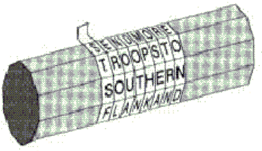

Nadawca i odbiorca potrzebowali dwóch cylindrów (szeœciennych lasek) o tej samej gruboœci
i takiej samej liczbie krawêdzi.
Nadawca nawija³ niewielki pas pergaminu wokó³ swojego cylindra i pisa³ swoj¹ wiadomoœæ na stykaj¹cych siê brzegach pergaminu. Wiadomoœæ na rozwiniêtym pasie mo¿liwa by³a do rozczytania tylko przez osob¹, która mia³a identyczny cylinder.

Jak mo¿na zastosowaæ ten algorytm przy u¿yciu CrypTool ?
tajna wiadomoœæ odpowiada identycznej permutacji (1,2,3, ..., n) o n kolumnach (n by³o liczb¹ krawêdzi w Skytale).
Przyk³ad:
Dla n=3 (dok³adnie 3 krawêdzie) nadawca pisa³ na pasie:
JAM ESB ONDi otrzyma³ rozwiniêty pas z:
JEO ASN MBD.
Jeœli napisa³
JAM ESB OND WAN TED DEADOR ALI VE
to otrzyma³
JEO WTD DAV ASN AEE OLEMBD NDA RI